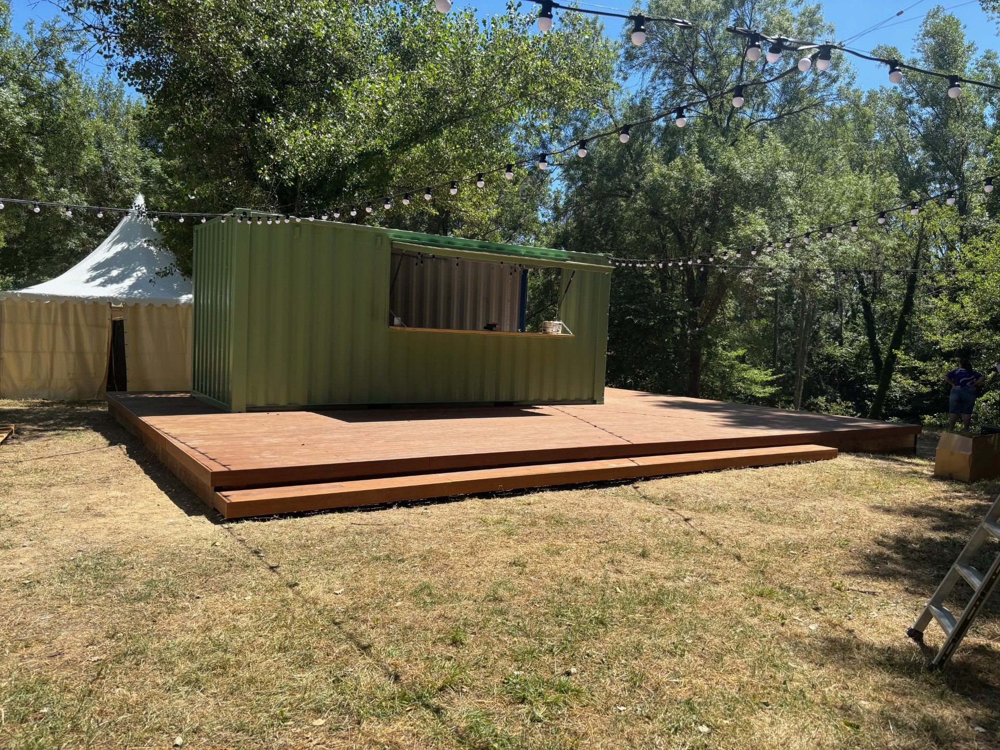

Photo à ajouter : img/platelage.jpgPlatelage bois, magasin Peugeot (Besnard)
Platelage en bambou sur rails dans le jardin privé du magasin Peugeot. J'ai posé le platelage au sein d'une équipe de 4, avec une scie à onglet et une scie sauteuse. Résultat : une terrasse en bois pour les 50 ans du magasin, conservée dans l'aménagement de l'espace.